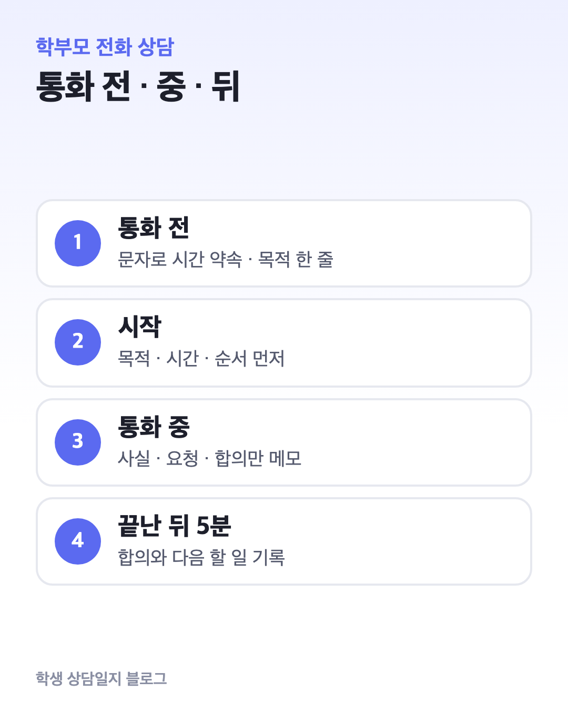
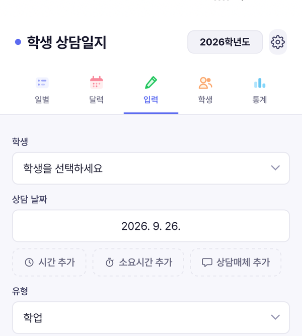

학부모 전화 상담 요령｜시작 멘트, 통화 중 메모, 끝난 뒤 기록까지
학부모 상담의 상당수는 전화로 이루어집니다. 얼굴을 보지 않으니 짧게 끝날 것 같지만, 막상 통화가 끝나면 무슨 이야기를 했고 무엇을 약속했는지 흐려지기 쉽습니다.
이 글은 전화 상담을 통화 전 · 통화 중 · 통화 뒤 세 단계로 나눠, 바로 쓸 수 있는 문자·멘트·메모 틀을 정리합니다. 예시는 모두 가상입니다.

1. 통화 전 — 시간을 먼저 약속합니다
「교원의 학생생활지도에 관한 고시」 제10조는 상담을 수업시간 외에 하고, 일시와 방법을 미리 협의해 정하는 것을 원칙으로 둡니다. 전화 상담도 같습니다.
갑자기 걸려 온 전화라면 짧게 용건만 듣고 시간을 다시 잡는 편이 서로에게 낫습니다.
[문자 예시]
○○ 어머님, 안녕하세요. ○반 담임 △△△입니다.
○○의 2학기 학교생활에 대해 10분 정도 통화드리고 싶습니다.
목요일 오후 4시~4시 30분 중 편하신 시간을 알려 주시면 그때 연락드리겠습니다.
통화 전에 이번 통화의 목적을 한 줄로 적어 둡니다. “수학 수행평가 미제출 2회 안내와 가정 확인 요청”처럼요.
한 줄이 있으면 이야기가 길어져도 돌아올 곳이 생깁니다.
2. 시작 멘트 — 목적과 시간을 먼저 말합니다
“통화 시간 내 주셔서 감사합니다. 오늘은 ○○의 수행평가 제출 이야기로 10분 정도 말씀 나누려고 합니다. 먼저 학교에서 본 모습을 말씀드리고, 가정에서는 어떤지 여쭤보겠습니다.”
처음 30초에 목적, 예상 시간, 진행 순서를 말하면 학부모도 무엇을 준비해 들어야 할지 압니다. 걱정되는 이야기일수록 학생의 좋은 점 한 가지를 먼저 전하면 대화가 부드러워집니다.
3. 통화 중 — 3칸으로만 메모합니다
통화하며 모든 말을 받아 적을 수는 없습니다. 종이 한 장을 세 칸으로 나눠 핵심만 적습니다.
| 칸 | 적는 것 | 예시 (가상) |
|---|---|---|
| 사실 | 학부모가 전한 사실, 날짜 | 9월부터 학원 시간이 늘어 귀가가 밤 10시 |
| 요청 | 학부모가 학교에 바라는 것 | 제출 기한을 미리 문자로 알려 주면 좋겠다 |
| 합의 | 서로 하기로 한 것, 기한 | 담임: 기한 3일 전 알림 / 가정: 주말에 확인 |
학부모의 표현은 가능하면 들은 그대로 짧게 적습니다. 나중에 “그런 말 한 적 없다”는 오해를 줄여 줍니다.
4. 곤란할 때 쓰는 멘트
통화가 길어질 때
“말씀 잘 들었습니다. 오늘은 약속드린 시간이 거의 되어서, 나머지 부분은 제가 확인한 뒤 금요일에 다시 연락드리겠습니다.”
담임이 결정할 수 없는 요청일 때
“그 부분은 제가 혼자 정할 수 있는 일이 아니라서, 담당 선생님과 확인한 뒤 답을 드리겠습니다.”
언성이 높아질 때
고시 제10조는 폭언·협박·폭행 등으로 상담을 이어 가기 어렵다고 판단되면 즉시 중단할 수 있다고 정하고 있습니다. 협의되지 않은 상담, 직무 범위를 넘는 상담, 근무시간 외 상담도 교원이 거부할 수 있습니다.
“지금은 대화를 이어 가기 어려울 것 같습니다. 오늘 통화는 여기서 마치고, 학교와 다시 일정을 잡아 말씀 나누겠습니다.”
이런 통화는 끝난 뒤 바로 일시와 내용을 기록하고, 관리자에게 공유합니다.
5. 마무리 — 합의한 것을 다시 말합니다
“정리하면, 제가 수행평가 기한 3일 전에 문자를 드리고, 가정에서는 주말에 한 번 확인해 주시기로 했습니다. 2주 뒤에 어땠는지 다시 연락드리겠습니다.”
마지막에 합의 내용과 다음 연락 시점을 소리 내어 복창하면, 학부모도 같은 내용을 기억하고 통화를 마칩니다.
6. 통화 뒤 5분 안에 기록하기
기억은 통화가 끝나자마자 흐려집니다. 다른 일을 시작하기 전에 아래 틀로 정리해 두세요.
| 항목 | 예시 (가상) |
|---|---|
| 일시 · 매체 · 소요 | 10월 8일 16:10 · 전화 · 12분 |
| 상대 · 계기 | 어머니 · 담임 요청(수행평가 미제출) |
| 요지 | 9월부터 학원 시간이 늘어 과제 확인이 어려웠다고 함 |
| 합의 | 담임: 기한 3일 전 문자 / 가정: 주말 확인 |
| 다음 할 일 | 10월 22일 경과 확인 전화 |
이 기록이 쌓이면 2학기 말 상담이나 학년 말 인수인계 때 “언제, 누구와, 무엇을 약속했는지”를 바로 찾을 수 있습니다.
7. 한 장 정리
| 단계 | 할 일 |
|---|---|
| 통화 전 | 시간 협의 문자 · 목적 한 줄 · 사실 2~3개 |
| 시작 | 목적 · 예상 시간 · 진행 순서 |
| 통화 중 | 사실 · 요청 · 합의 3칸 메모 |
| 마무리 | 합의와 다음 연락 시점 복창 |
| 통화 뒤 | 5분 안에 기록 (일시 · 매체 · 요지 · 합의 · 다음 할 일) |
기록 문장을 어떻게 써야 나중에 읽어도 오해가 없는지는 상담 기록 문장 쓰는 법에 정리했습니다.
8. 기록을 한곳에 모으고 싶다면

학생 상담일지는 위 기록 틀을 그대로 담을 수 있는 담임용 기록 앱입니다. 상담매체(전화·대면 등)와 소요시간을 함께 남기고, 학생을 누르면 그동안의 상담이 날짜순으로 모여 보입니다.
출처: 교원의 학생생활지도에 관한 고시(교육부, 2023. 9. 1. 시행)
이 블로그는 ‘학생 상담일지’ 앱 운영자가 씁니다. 공식 자료와 대조해 정리했습니다.